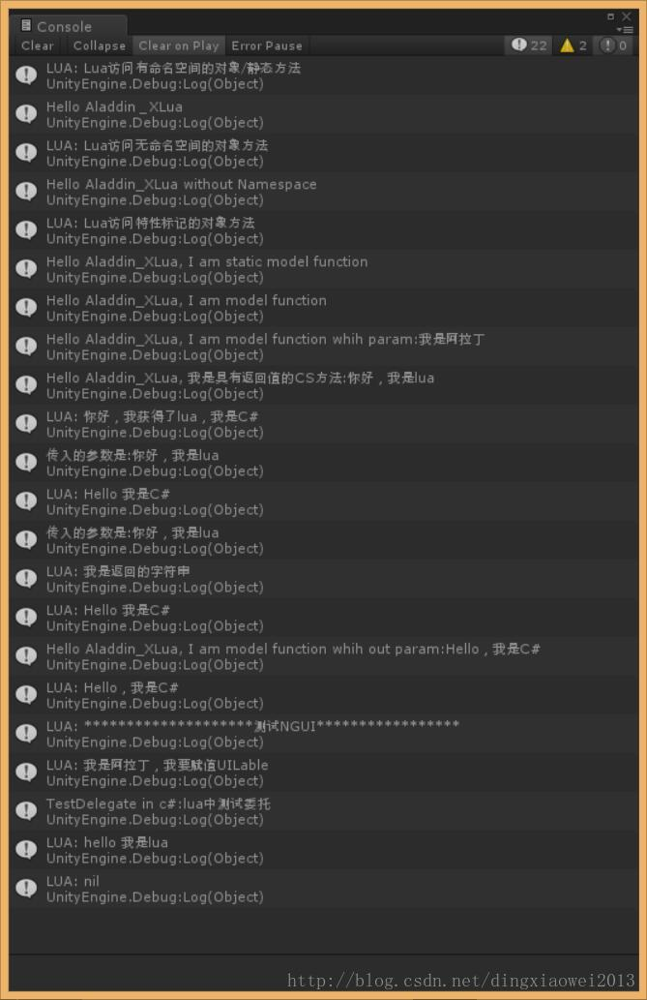
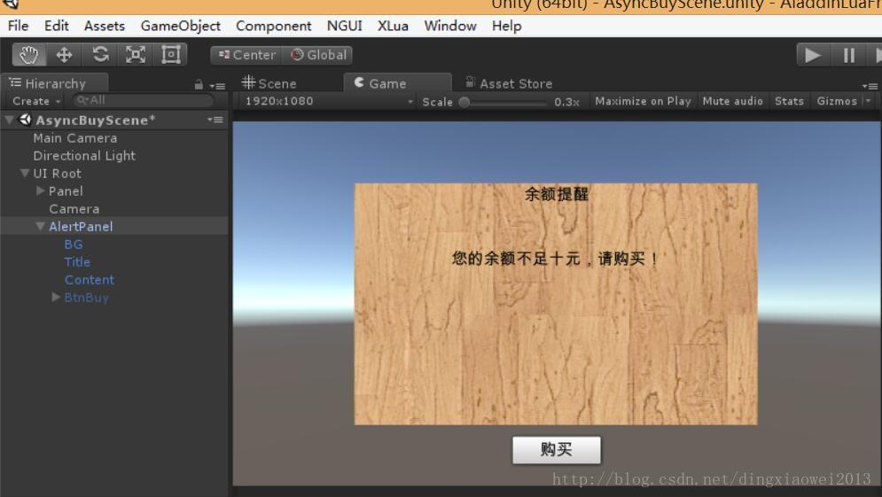

#Aladdin_XLua
前言
前段时间腾讯开源了一个内部热更框架XLua在Unity开发群里引起一阵热议，也受到广大开发者的热捧，然后我当然也抱着好奇的心去学习学习。后面也会将扩展之后的工程放在git上，大家一起学习交流！在此感谢XLua作者创造出这么好用的框架！
相关链接
个人对XLua看法
- 简洁易用，容易上手
- 可扩展性高，添加自定义的CS模块或者第三方插件非常方便
- 大厂维护，可靠
- 特色：HotFix
关于这个HotFix是其他热更lua框架所不具备的，也是他最大的优势和特色之一，原理就是通过特性标记然后在IL逻辑层判断修改逻辑，使程序支持热更的lua逻辑代码而不是走之前的C#逻辑
自己扩展XLua支持NGUI开发
现在开源热更Lua框架都很少支持NGUI了，可能现在趋势都是用原生的UGUI，但估计还有一些NGUI粉喜欢用NGUI开发，毕竟NGUI用了很长时间，XLua例子里面已经支持了lua使用UGUI，这里我就自己补充让它支持NGUI开发。后续我也会多添加一些UGUI的例子。先看看扩展的NGUI做的界面效果图，然后下面再讲解怎么让XLua支持第三方插件。
效果图

快速上手
在学习一个东西之前最好先学习一下XLua作者辛辛苦苦写的那些多教程文档，包括案例以及wiki和issu，如果还有什么不明白的地方可以在加入文章最后的群我们一起交流学习。
1.自定义C#类供Lua访问
这里可以学习一下作者写的Test中的例子，还是比较详细，但我还是想记录一下我自己尝试的过程。
（1）特性方式
XLua支持使用特性标签让自定义的类可供Lua访问
C#：
1 | public class CSModelWithAttribute |
添加上特性标签之后，程序在启动的会自动查找具有特性标记的类然后搜集进入lua栈，使得我们可以用Lua访问自定义的C#类和方法。
Lua访问：
1 | using UnityEngine; |
（2）wrap方式
如果是我们自己写的C#代码，我们可以通过第一种方式添加特性来让Lua支持也是比较方便，如果是用的开源第三方插件，我们如何快速的让XLua支持，就可以用过Generate Wrap的方式，这一点也是其他lua框架所采取的策略。
a）有命名空间的类
C#：
1 | namespace Aladdin_XLua |
Lua：
1 | print('Lua访问有命名空间的对象/静态方法') |
luaModel是C#类，下面luaObj是类生成的对象，最后是访问对象方法，关于Lua冒号调用和点调用的区别：冒号调用默认传入了self参数，不清楚的可以百度相关文章。
b）无命名空间的类
C#：
1 | public class CSModelWidhoutNameSpace |
Lua：
1 | print('Lua访问无命名空间的对象方法') |
如果没有命名空间的话直接CS后面就是类名，其实CS也是一个更外面一层的命名空间，只不过是作者帮我们分装的。
3）委托类型
C#：
1 | public class CSModelTest |
委托其实也是跟Class平级的，委托也是一种类型，所以我们也需要对它像对待类那样处理，通过添加特性标记或者通过Wrap方式处理，这里委托是放在类里面，其实也可以直接放在命名空间下面，.NET库是这样操作的，但我们看NGUI源码会发现，NGUI源码都是这样操作的，比如按钮的onClick事件，看它的委托类型VoidDelegate就会发现也是这样操作的，所以我这里例子也放在类的里面。
C#
1 | public class CSModelTest |
Lua:
1 | local luaM3 = CS.CSModelTest |
4）带有ref out 参数的函数如何处理
因为Lua是弱类型没有C#那么多类型，有时候一些参数可能就不太好处理，比如C#的不同类型参数的重载，lua就不太好处理，这里可以查看XLua中的issues，作者有一个问题的相关解答。下面我举例ref和out参数类型的函数Lua如何访问。
C#:
1 | public void SayHelloWithRefParam(ref string s) |
Lua:
1 | --测试ref |
一开始我测试的时候是本以为lua调用ref传入的参数，也会返回出修改的结果，但出乎我的意料，并没能修改，经过作者提示，lua是通过返回值返回的ref参数，如果函数本身就有返回值，那么最后一个参数是返回的ref或者out参数，这个读者可以尝试一下。
运行结果

关于Wrap
Wrap是C#跟Lua之间的一个桥梁，Lua想要访问C#必须要用过Wrap访问，相信看过其他Lua框架的这一点应该不陌生，XLua对生成Wrap也是非常方便。
我们只要新建一个类然后继承一个GenConfig的接口，下面是接口内容，关于这几个类型XLua文档中也有介绍，我们只需要把自定义的类添加到LuaCallCSharp集合中即可，然后点击Generate就会自动帮我们生成对应的Wrap文件
1 | //注意：用户自己代码不建议在这里配置，建议通过标签来声明!! |
当然作者也说了，我们自定的C#代码最好不要通过这种方式，我这里只是演示如何添加，下面会说第三方插件通过这话总方式支持。
C#:
1 | public static class AladdinGenConfig |
2.NGUI扩展
正如上图所示的效果，下面讲述一下我是如何支持NGUI扩展的，也参考了作者UGUI的一个例子修改的。
a）生成Wrap接口
这一步上上面说的一样，只要把NGUI的组件类全部都添加到LuaCallCSharp列表中然后Generate一下即可，这里要注意的是组件中委托类型也需要添加进去。
b）搭建两个UI界面，UI逻辑接口用C#，Lua是调用逻辑调用界面中C#的方法。

C#:
购买
1 | using UnityEngine; |
Panel逻辑：
1 | using UnityEngine; |
Lua：
lua文件放在对应的Resources下即可
async_buy.lua
1 |
|
message_panel.lua
1 |
|
运行的结果就如第一张图所示
下载地址
https://git.oschina.net/dingxiaowei/Aladdin_XLua.git
Github同步：https://github.com/dingxiaowei/Aladdin_XLua
关注后续更新请点start或者fork，感谢！